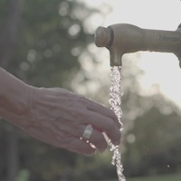

III Día Mundial de la Urticaria Crónica
1 de octubre de 2016
III Día Mundial de la Urticaria Crónica
1 de octubre de 2016
La Asociación de Afectados de Urticaria Crónica (AAUC), para la celebración de este tercer Día Mundial hemos querido trabajar en tres projectos
distintos, destinados a tres públicos distintos:
- Un proyecto para la población general, para que nos conozcan mejor.
- Otro única y exclusivamente para nosotros, los afectados y afectadas, para que vivamos mejor.
- Un último proyecto para entablar relaciones con asociaciones de otros países.
Agradecimientos
El Día Mundial y la Asociación en sí existen porque hay mucha gente y entidades que colaboran
y nos ayudan. Desde aquí queremos agradecérselo muy sinceramente: a nuestros socios por estar
siempre ahí, a nuestros seguidores en las redes sociales que nos hacen ver que nuestros actos
son útiles a mucha gente, a nuestro comité científico asesor y a las sociedades científicas por
sus inestimables consejos y a los laboratorios colaboradores (Novartis y Uriach) por su apoyo
y ayuda.
¡Recuerda lo que hicimos el año 2015 para el Día Mundial!

Para todos
Porque queremos que la sociedad nos conozca
Para todos
Porque nos merecemos vivir mejor
El 1 de octubre ¡queremos que nos conozcas! Y es que, si entre todos compartimos que existe una enfermedad llamada urticaria crónica, estaremos apoyando y ayudando a mejorar la calidad de vida de las personas que la padecen.
Nuestra ilusión es que nos des la mano en el III Día Mundial de la Urticaria Crónica para que esta afección deje de ser tan desconocida.
Para nosotros
Porque nos merecemos vivir mejor
Para nosotros
Porque nos merecemos vivir mejor
El 1 de octubre los afectados de urticaria crónica somos los grandes protagonistas. ¡Y queremos hacer algo importante para ti! Porque sabemos que esta enfermedad va mucho más allá de sus síntomas y tiene un impacto devastador en nuestras vidas.
Nuestro propósito es que nos acompañes y te sumes al III Día Mundial de la Urticaria Crónica, porque vamos a ayudarte a vivir mejor.
For them
Because we want to meet you
For them
Because we want to meet you
This year we also want to share what we do with more people. That’s why we've translated one of our most beloved projects into English.
We want to take the opportunity to contact and establish relationships with other organisations all around the world.
Are you one of them? Contact us!